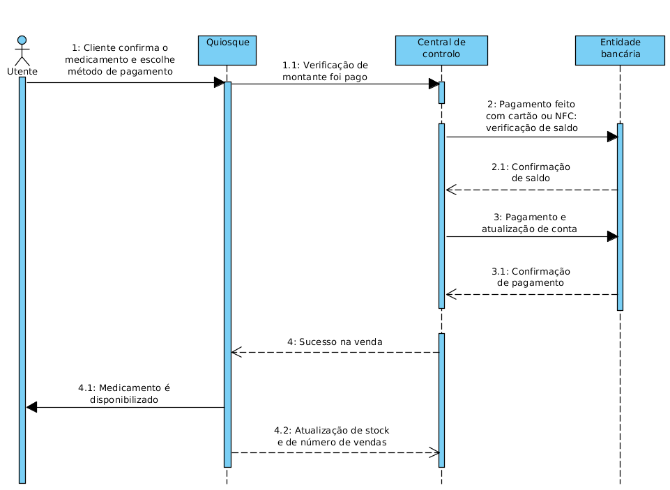

Elaboration #2 - V2.0
Conceito de arquitetura
Este projeto é composto por duas componentes essenciais: quiosques de venda de medicamentos não sujeitos a receita médica (o número de quiosques dependerá da quantidade de farmácias aderentes) e o sistema central de controlo, que cordena todos os quiosques. O objetivo desta solução é acrescentar serviços de apoio à indústria farmacêutica, nomeadamente a aquisição de medicamentos sem receita médica por parte do utente.
Este projeto apresenta uma solução para alguns problemas do quotidiano, tais como, deslocação a farmácias de serviço à noite e tempo de atendimento. Foi, portanto, feito um estudo de mercado e de cliente, através de um questionário (a várias pessoas, os possíveis futuros utilizadores dos quiosques) e entrevistas a farmácias da cidade de Aveiro. Os resultados destes estudos foram já apresentados no Relatório técnico: Visão do projeto.
Modelo de comportamento
Operações de sistema
O seguinte diagrama explicita as operações do sistema projetado.

(Diagrama de sequência - operações do sistema)
Integrações com sistemas externos
A troca de mensagens com sistemas externos dá-se somente quando a compra de um medicamento é feita com cartão MB ou através de NFC, sendo então necessário que o centro de controlo comunique com uma entidade bancária, verificando o saldo da conta, e faça a transferência. Após efetuado o pagamento, dá-se a atualização da conta.
O diagrama acima explicita já estas interações com sistemas externos.
Arquitetura aplicacional
O utente dirige-se a um quiosque e escolhe o medicamento que pretende adquirir e efetua o pagamento. O papel do quiosque será recolher a informação dessa interação e passá-la à central de controlo. Por sua vez, a central de controlo contém informações de todos os quiosques (pois estão ligados em rede) e notificações/avisos que guarda na sua base de dados. Os avisos necessários são ainda enviados para a farmácia. O papel do farmacêutico é prestar auxílio aos utentes e repôr o stock de medicamentos quando necessário.
O seguinte diagrama explicita as operações do sistema projetado.
(Diagrama de pacotes - arquitetura lógica)